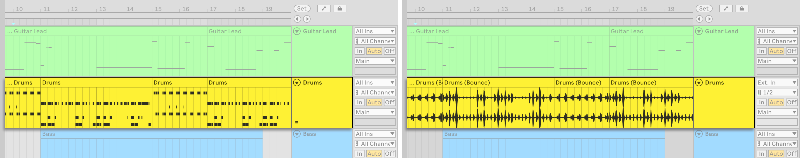
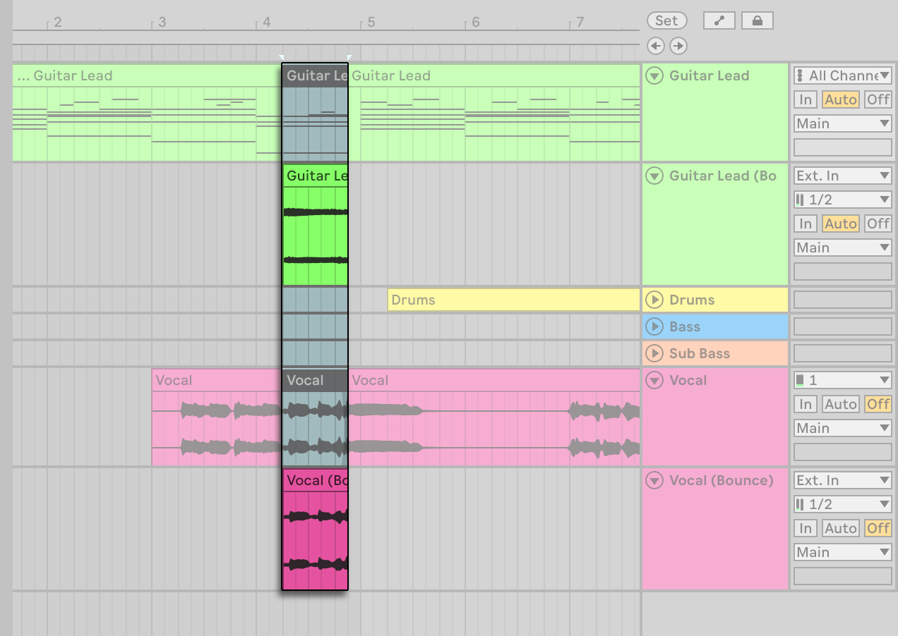
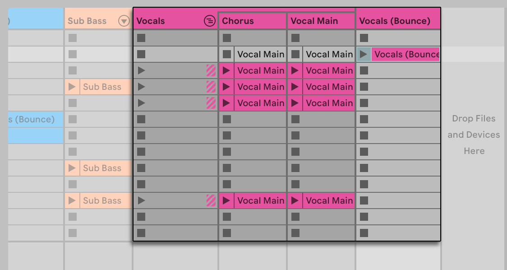
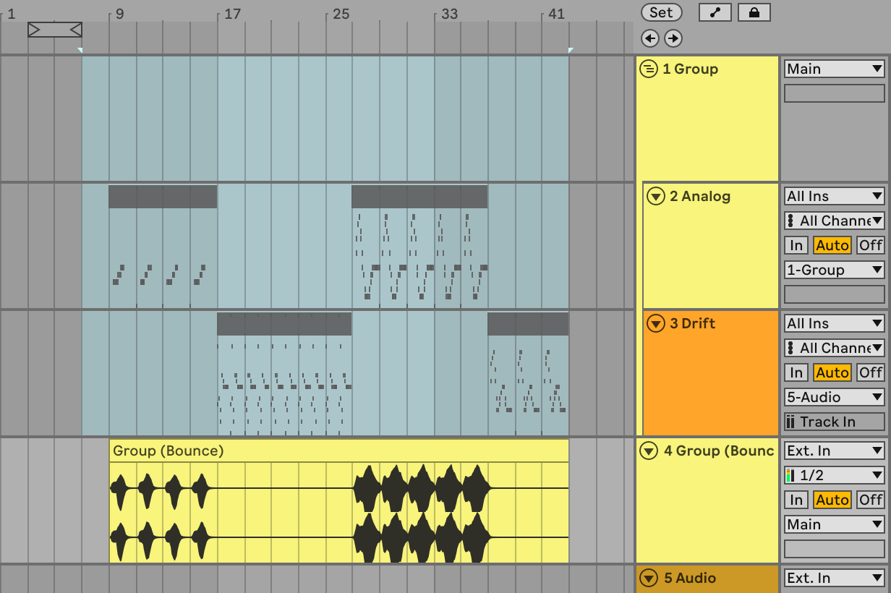

20. Bounce to Audio
Bouncing allows you to commit tracks, clips, or time selections into audio on new audio tracks. It is great for creative exploration: once material is bounced to audio, you can manipulate it in new ways or experiment with sound variations. You can also use it to “lock in” your material, either to move forward creatively or to prepare the Set for mixing by finalizing the sound design and setting up a clean device chain dedicated to the mix work. Bouncing can also be helpful in reducing the CPU load, thus freeing up resources for other parts of your project.
You can use bouncing in the Arrangement or Session View. Given that the views share the same set of tracks, a track created as a result of a bounce in one view will be created in the other as well.
20.1 Bouncing Individual Tracks
You can bounce to audio in two ways using the Bounce Track in Place and Bounce to New Track commands.
Bounce Track in Place commits a source track as a new audio track which replaces the source. Note that the command has superseded the Freeze and Flatten Track command (as well as the Flatten command for frozen tracks) known from previous versions of Live. You can access the Bounce Track in Place command from the track’s title bar or clip context menu.

Bounce to New Track commits individual clips or a time selection to new audio clips on a separate track and mutes the source clips or selection. You can access the Bounce to New Track command from the clip or selection context menu, as well as via the CtrlB (Win) / CmdB (Mac) shortcut.

Bouncing to audio is performed post-FX and pre-mixer. This means that the bounced audio includes all device processing without retaining the devices on the track, but excludes mixer adjustments (i.e., volume, panning, and sends), which are instead preserved in the new track’s settings.
When bouncing time selections spanning multiple Arrangement tracks, the Bounce to New Track command generates a separate audio track for every track on which a clip is selected.

Note that while bouncing commands are applied in the Arrangement and Session simultaneously, the results are slightly different depending on the command used. When using Bounce Track in Place in one of the views, for example the Arrangement, the new audio track replaces the source track in the Session as well, and both the Arrangement and Session clips are bounced to audio. However, when using the Bounce to New Track command in a view, for example the Session, a new audio track is created in the Arrangement as well, but only the selected Session clips are bounced to audio and the new track in the Arrangement View is empty.
Tracks and clips created via the bouncing commands inherit the name of the source track or clip with “(Bounce)” added to the end of the name. If a source clip has no name, the clip in the new track is named “(Bounce).” The new track also inherits the source track’s color.
Bounced audio files are stored within the Current Project folder under /Samples/Processed/Bounce.
20.2 Bouncing Group Tracks
Apart from bouncing individual tracks, it is also possible to bounce Group Tracks in Live. There are two commands for bouncing Group Tracks: Bounce Group in Place and Bounce Group to New Track.
Bounce Group in Place commits a new audio track that replaces the whole Group Track. You can access the command from a Group Track’s title bar context menu, a group slot’s context menu in Session View, or the Group Track’s main lane context menu in Arrangement View.

Bounce Group to New Track commits individual clips or a time selection made within the Group Track to a new audio clip on a separate track and mutes the source clips or selection. You can access the Bounce Group to New Track command from a group slot’s context menu in Session View or from the Group Track’s main lane context menu in Arrangement View. You can also use the CtrlB (Win) / CmdB (Mac) shortcut to apply the command.

Note that bouncing Group Tracks works differently to bouncing individual tracks. While the latter performs the bounce pre-mixer and copies the source track’s mixer settings to the bounced track, Group Tracks are bounced post-mixer. This means that the audio is processed from the Main track’s output, including all the effects and sends used inside the Group, but excluding any processing on the Main track. The exact results depend on the routings: any tracks routed outside of the Group Track will not be included in the bounce and may lead to silence in the bounced audio, while any return tracks that are part of the Group Track’s signal path are only included in the bounce if their final output reaches the Main track.

20.3 Pasting Bounced Audio
You can use the Paste Bounced Audio command as an alternative to bouncing to a new track. When pasting bounced audio, the source material is bounced in its current state at the time Paste Bounced Audio is used, which means that you can modify the source material and quickly bounce and paste the audio without having to select and copy the source material again. This can be useful for creating quick variations of the same material using different effects or for bouncing multiple selections from different tracks into a single track.

To paste bounced audio, copy clips in a single track in the Session View, a time selection or clips in the Arrangement, or a time selection in a Group Track’s main lane in the Arrangement. You can use the Copy command or the CtrlC (Win) / CmdC (Mac) shortcut. Then, in an audio track, an empty MIDI track, or a take lane use the Paste Bounced Audio command from the track’s main lane context menu or the CtrlAltV (Win) / CmdOptV (Mac) shortcut. The copied material will be bounced and pasted onto the track. If you paste bounced audio into a MIDI track, it will be automatically converted to an audio track.
Note that if the copied source material is deleted, the Paste Bounced Audio command will become unavailable until you copy new material.